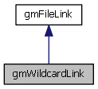

Category structure for indicating a link by a set of files referenced by wildcards to gmManager::mark_node() function. More...
#include <gridmd.h>
Inheritance diagram for gmWildcardLink:

Collaboration diagram for gmWildcardLink:

Detailed Description
Category structure for indicating a link by a set of files referenced by wildcards to gmManager::mark_node() function.
Constructed with a given pattern for source that may include wildcards and desination which must be a directory name.
The documentation for this struct was generated from the following file: